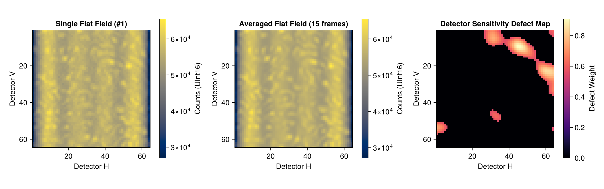
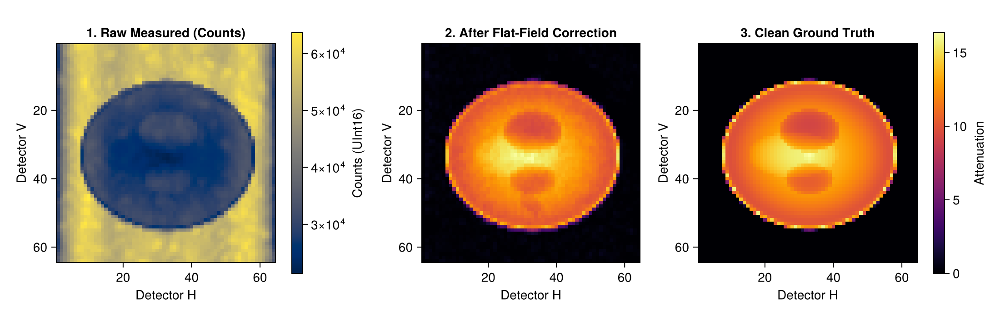
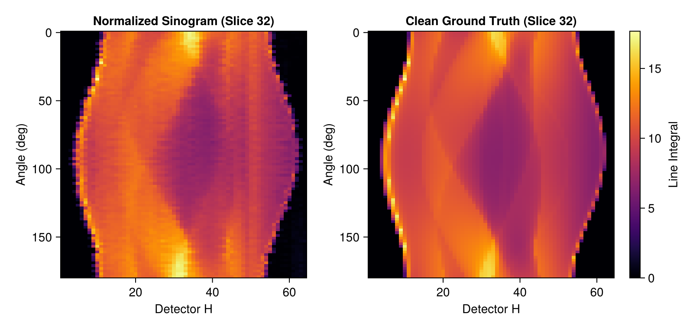

TomoPhantom.jl: Flat-Field Synthesis and CT Normalization Preprocessing
This tutorial demonstrates how to use the synth_flats module in TomoPhantom.jl to simulate real-world physical CT imaging effects (synchrotron radiation or laboratory X-ray CT) and perform standard preprocessing (Flat-Field Correction / Normalization).
Imaging Physics and Flat-Field Correction Background
In real X-ray CT acquisition systems, illumination is not perfectly uniform:
- Beam Profile: Spatial intensity gradients caused by X-ray source geometry and optical elements (e.g. Bessel profile background with peripheral roll-off).
- Speckle & Scintillator Imperfections: Microscopic dust, grain boundaries, and scintillator defects cause high-frequency intensity variations.
- Detector Miscalibration: Variations in pixel-to-pixel gains and sensitivities produce stripe artifacts in sinograms and ring artifacts in reconstructed slices.
- Photon Statistics & Electronic Noise: Poisson counting fluctuations and Gaussian readout noise.
- Mechanical Wobble / Jitter: Minor subpixel rotation axis wobble during gantry rotation.
To correct for these imperfections, multiple flat-field (bright-field / $I_0$) images are collected without the specimen. Measured raw transmission counts $I_{\text{raw}}$ (Pre-log data) are then normalized using the Beer-Lambert law to retrieve linear attenuation line integrals (Post-log data):
\[\text{Normalized Sinogram} = -\ln\left(\frac{I_{\text{raw}}}{\bar{I}_{\text{flat}}}\right) = \int \mu(x, y, z) \, ds\]
Key Topics Covered
- Generating ideal 3D ground-truth projection data
- Synthesizing realistic flat-field images and raw transmission radiographs with
synth_flats - Visualizing beam profiles, flat fields, and detector defect maps with Makie
- Implementing flat-field correction and Beer-Lambert logarithmic conversion
- Comparative evaluation: Uncorrected raw data vs. Normalized data vs. Clean ground truth
Prerequisites
This tutorial uses Makie (recommended backend: CairoMakie) for visualization. If CairoMakie is not installed in your environment, add it by running using Pkg; Pkg.add("CairoMakie").
0. Package Loading and Environment Setup
using TomoPhantom
using CairoMakie
using Statistics1. Generating Ideal Clean 3D Projection Data
We first generate clean reference 3D projection data using sino3d_natural with Model 13 (3D Shepp-Logan).
Note: The
synth_flatsfunction expects input projection data formatted as[Vert_det, Angle, Horiz_det]. Sincesino3d_naturaloutputs[Horiz_det, Vert_det, Angle], we permute dimensions usingpermutedims.
core = NativeCore()
lib3d_path = default_3d_library_path()
model_shepp3d = LibraryModel(13, lib3d_path)
# Geometry setup: 64 x 64 detector, 90 projection angles
N = 64
det_u = 64
det_v = 64
angles = collect(Float32, range(0.0f0, 179.0f0; length = 90))
geom3d = SinoGeom3D(N, det_u, det_v, angles, 0, det_v)
# Compute analytical 3D projection data: [u, v, angle]
sino3d_clean = sino3d_natural(core, model_shepp3d, geom3d)
# Permute axes to [Vert_det, Angle, Horiz_det] for synth_flats
proj_clean = permutedims(sino3d_clean, (2, 3, 1))
println("Clean projection dimensions [V, Angle, H]: ", size(proj_clean))Clean projection dimensions [V, Angle, H]: (64, 90, 64)2. Synthesizing Flat-Fields and Raw Transmission Data (synth_flats)
synth_flats models non-uniform illumination beams, detector defects, photon noise, and mechanical wobbles.
Function Arguments
proj_data_3d_clean: Clean 3D projection data[V, Angle, H]source_intensity: Incident photon flux (determines Poisson noise SNR, e.g.30000–50000)flatsnum: Number of flat-field images to synthesize (default:20)detectors_miscallibration: Degree of detector pixel sensitivity variation (causes stripe/ring artifacts)specklesize: Size of optical/scintillator dust specklesjitter_projections: Subpixel mechanical rotation axis jitter amplitude (in pixels)- Return values:
(proj_data_3d_raw, flats_3d, blurred_speckles_map)proj_data_3d_raw:UInt163D array[V, Angle, H](raw transmitted photon counts $I$)flats_3d:UInt163D array[V, flatsnum, H](incident flat-field photon counts $I_0$)blurred_speckles_map:Float323D array[V, H, variations](pixel sensitivity defect maps)
# Synthesize flat-field images and raw transmission projections
source_flux = 30000.0f0
proj_raw, flats_3d, speckles_map = synth_flats(
proj_clean,
source_flux;
flatsnum = 15,
detectors_miscallibration = 0.05,
specklesize = 3,
sigmasmooth = 3,
jitter_projections = 0.5
)
println("Raw transmission shape [V, Angle, H]: ", size(proj_raw), " type: ", eltype(proj_raw), " range: ", extrema(proj_raw))
println("Flat-field images shape [V, flats, H]: ", size(flats_3d), " type: ", eltype(flats_3d), " range: ", extrema(flats_3d))
println("Defect map shape [V, H, variations]: ", size(speckles_map))Raw transmission shape [V, Angle, H]: (64, 90, 64) type: UInt16 range: (0x503c, 0xffff)
Flat-field images shape [V, flats, H]: (64, 15, 64) type: UInt16 range: (0x67b8, 0xffff)
Defect map shape [V, H, variations]: (64, 64, 3)Visualizing Flat-Fields and Detector Defect Maps
We visualize an individual flat-field frame, the averaged master flat field, and the detector pixel sensitivity defect map (the source of stripe/ring artifacts).
flat_sample = Float32.(flats_3d[:, 1, :])
flat_mean = dropdims(mean(Float32.(flats_3d), dims = 2), dims = 2)
speckle_pat = speckles_map[:, :, 1]
fig1 = Figure(size = (1150, 360))
ax1 = Axis(fig1[1, 1], title = "Single Flat Field (#1)", xlabel = "Detector H", ylabel = "Detector V", aspect = DataAspect(), yreversed = true)
hm1 = heatmap!(ax1, flat_sample, colormap = :cividis)
Colorbar(fig1[1, 2], hm1, label = "Counts (UInt16)")
ax2 = Axis(fig1[1, 3], title = "Averaged Flat Field (15 frames)", xlabel = "Detector H", ylabel = "Detector V", aspect = DataAspect(), yreversed = true)
hm2 = heatmap!(ax2, flat_mean, colormap = :cividis)
Colorbar(fig1[1, 4], hm2, label = "Counts (UInt16)")
ax3 = Axis(fig1[1, 5], title = "Detector Sensitivity Defect Map", xlabel = "Detector H", ylabel = "Detector V", aspect = DataAspect(), yreversed = true)
hm3 = heatmap!(ax3, speckle_pat, colormap = :magma)
Colorbar(fig1[1, 6], hm3, label = "Defect Weight")
fig1
3. Flat-Field Normalization and Logarithmic Conversion
In standard CT reconstruction pipelines, preprocessing consists of two main steps:
- Transmittance $T$ Calculation: Divide raw transmitted counts $I_{\text{raw}}$ by the averaged master flat $\bar{I}_{\text{flat}}$: $T = \frac{I_{\text{raw}}}{\bar{I}_{\text{flat}}}$ (Dense regions attenuate photons so $T < 1$, while open beam regions have $T \approx 1$).
- Line Integral (Absorbance) Conversion: Apply the negative natural logarithm based on the Beer-Lambert law: $P = -\ln(T) = -\ln\left(\frac{I_{\text{raw}}}{\bar{I}_{\text{flat}}}\right)$
# 1. Reference flat field (with small epsilon to avoid division by zero)
flat_ref = flat_mean .+ 1.0f-5
raw_float = Float32.(proj_raw)
# 2. Calculate transmittance and negative logarithm per projection angle
proj_normalized = zeros(Float32, size(proj_raw))
for a in 1:length(angles)
# Transmittance T = I / I0
transmittance = clamp.(raw_float[:, a, :] ./ flat_ref, 1.0f-6, 1.0f0)
# Absorbance P = -ln(T)
proj_normalized[:, a, :] .= -log.(transmittance)
end
# Rescale to match clean ground-truth amplitude for visual comparison
scale = maximum(proj_clean) / (maximum(proj_normalized) > 0 ? maximum(proj_normalized) : 1.0f0)
proj_normalized .*= scale
println("Flat-field normalization and log conversion completed.")Flat-field normalization and log conversion completed.4. Visualizing Preprocessing Results
We compare a single 2D radiograph at 0° across the pipeline:
- Uncorrected (Raw Transmission Counts): Objects appear as dark attenuation shadows on top of non-uniform illumination and speckles.
- Normalized Radiograph: Flat-field division and negative logarithm cancel the beam profile, faithfully restoring positive attenuation line integrals.
- Clean Ground Truth: The ideal numerical projection for comparison.
fig2 = Figure(size = (1100, 360))
# 1. Uncorrected raw transmission counts
ax2_1 = Axis(fig2[1, 1], title = "1. Raw Measured (Counts)", xlabel = "Detector H", ylabel = "Detector V", aspect = DataAspect(), yreversed = true)
hm2_1 = heatmap!(ax2_1, Float32.(proj_raw[:, 1, :]), colormap = :cividis)
Colorbar(fig2[1, 2], hm2_1, label = "Counts (UInt16)")
# 2. After flat-field correction
ax2_2 = Axis(fig2[1, 3], title = "2. After Flat-Field Correction", xlabel = "Detector H", ylabel = "Detector V", aspect = DataAspect(), yreversed = true)
hm2_2 = heatmap!(ax2_2, proj_normalized[:, 1, :], colormap = :inferno)
# 3. Clean ground truth
ax2_3 = Axis(fig2[1, 4], title = "3. Clean Ground Truth", xlabel = "Detector H", ylabel = "Detector V", aspect = DataAspect(), yreversed = true)
hm2_3 = heatmap!(ax2_3, proj_clean[:, 1, :], colormap = :inferno)
Colorbar(fig2[1, 5], hm2_3, label = "Attenuation")
fig2
Sinogram Slice Comparison
We extract a 2D sinogram slice at the central detector height ($V = N/2$) and compare the normalized result with the ideal projection. Fine vertical stripes arising from detector miscalibration are clearly visible, faithfully mirroring real acquisition artifacts.
mid_slice = det_v ÷ 2
fig3 = Figure(size = (800, 380))
ax3_1 = Axis(fig3[1, 1], title = "Normalized Sinogram (Slice $(mid_slice))", xlabel = "Detector H", ylabel = "Angle (deg)", yreversed = true)
heatmap!(ax3_1, 1:det_u, geom3d.angles_deg, proj_normalized[mid_slice, :, :]', colormap = :inferno)
ax3_2 = Axis(fig3[1, 2], title = "Clean Ground Truth (Slice $(mid_slice))", xlabel = "Detector H", ylabel = "Angle (deg)", yreversed = true)
hm3_2 = heatmap!(ax3_2, 1:det_u, geom3d.angles_deg, proj_clean[mid_slice, :, :]', colormap = :inferno)
Colorbar(fig3[1, 3], hm3_2, label = "Line Integral")
fig3
Summary
In this notebook, we simulated CT acquisition physics and standard flat-field correction using TomoPhantom.jl:
synth_flats: Comprehensive simulation of non-uniform X-ray beam profiles, scintillator dust, detector miscalibrations, Poisson photon noise, and mechanical jitter- Physically Grounded Pre-log Data: Outputting realistic
UInt16count values modeling exponential attenuation ($e^{-\mu L}$) - Flat-Field Correction Pipeline: Master flat averaging and Beer-Lambert logarithmic conversion
- Visual Validation with CairoMakie: Verifying that illumination gradients are eliminated and linear attenuation projections are restored for reconstruction
For 2D and 3D stationary phantoms and temporal (4D) simulations, refer to demo_2d.ipynb, demo_3d.ipynb, demo_temporal_4d.ipynb, and the official documentation.
This page was generated using Literate.jl.